Первоначальная настройка¶
Онлайн бухгалтерия wFirma первый год бесплатно 🪄¶
Подписка для бухгалтерии ИП 2026: MALAKSIEGOWOSC-2026 (1 год) или PROX-KSIEGOWOSC (3 мес.) или K9D6ECEE29 (неизвестно) (подходит для ryczałt, skala podatkowa, liniowy).
Регистрироваться только по этой ссылке ▶️ https://wfirma.pl/rejestracja-przez-kody ◀️
Регистрация¶
- В поле Kod pakietu укажите код, чтобы получить бесплатный год.
- Укажите номер своего NIP при регистрации, чтобы сведения о вашем ИП были автоматически загружены из реестра.
- Прочитайте и примите правила сервиса (галочка Akceptuję regulamin serwisu).
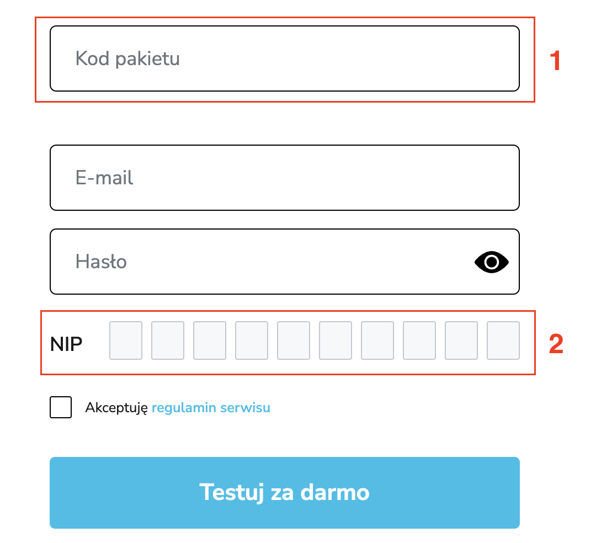
После регистрации переходим к настройкам.
- Нажимаем на иконку профиля.
- Нажимаем на Ustawienia (Настройки).
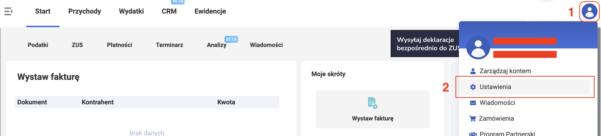
Настройка данных фирмы¶
Данные фирмы показываются на фактуре для заказчика. Скорее всего, wfirma сама предложит заполнить эти данные сразу после регистрации и не пустит дальше, пока вы их не внесёте.
-
На панели настроек Moja firma выбираем Edytuj (Редактировать).
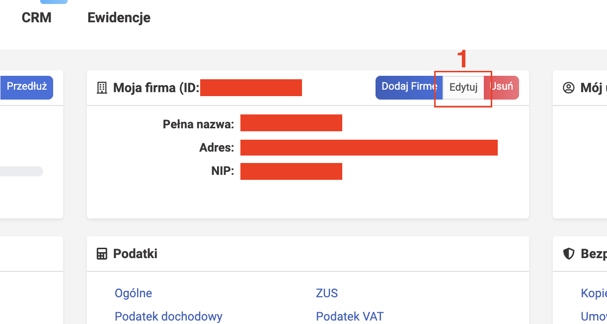
-
В диалоговом окне DANE PODSTAWOWE - DANE IDENTYFIKACYJNE заполняем общие данные о себе (вкладка OGÓLNE), такие как:
- полное название (Nazwa pełna)
- сокращённое название (Nazwa skrócona)
- NIP (только цифры, без префикса PL)
- REGON
- BDO (у простого программиста такого номера может не быть - это ок)
- телефон
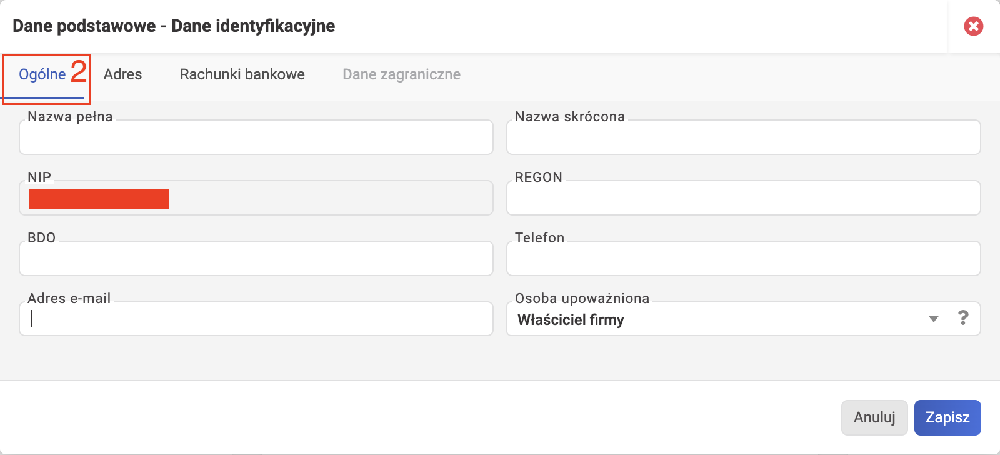
-
Заполняем адрес (вкладка Adres).
Укажите корректные данные 5 ваших адресов:
Polski Русский adres prowadzenia działalności адрес ведения деятельности adres zameldowania адрес регистрации по месту жительства adres zamieszkania адрес проживания adres korespondencyjny почтовый адрес / адрес для корреспонденции adres na fakturze sprzedaży адрес на фактурах, к-е вы будете выставлять Если при регистрации JDG указывали "не имею постоянного места ведения деятельности", то можете заполнить адрес замешкания, например, адрес арендованной квартиры. В данном случае это нормально, т.к. данный адрес нам нужен для отображения на фактурах для заказчика.
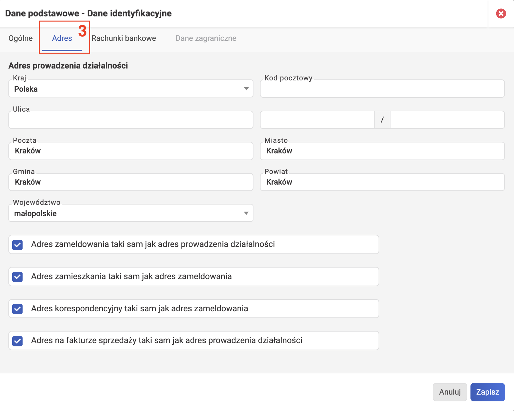
-
Переходим на вкладку банковских счетов (Rachunki bankowe).
- Нажмите кнопку Dodaj rachunek (Добавить счет).
-
В диалоговом окне Dodawanie rachunku bankowego заполните данные о банковском счёте на обеих вкладках (Podstawowe informacje + Zaawansowane) и нажмите Zapisz (Сохранить).
Можно добавить несколько банковских счетов. Затем при выставлении фактуры можете выбрать добавленный банковский счет, который будет показываться на фактуре для заказчика.
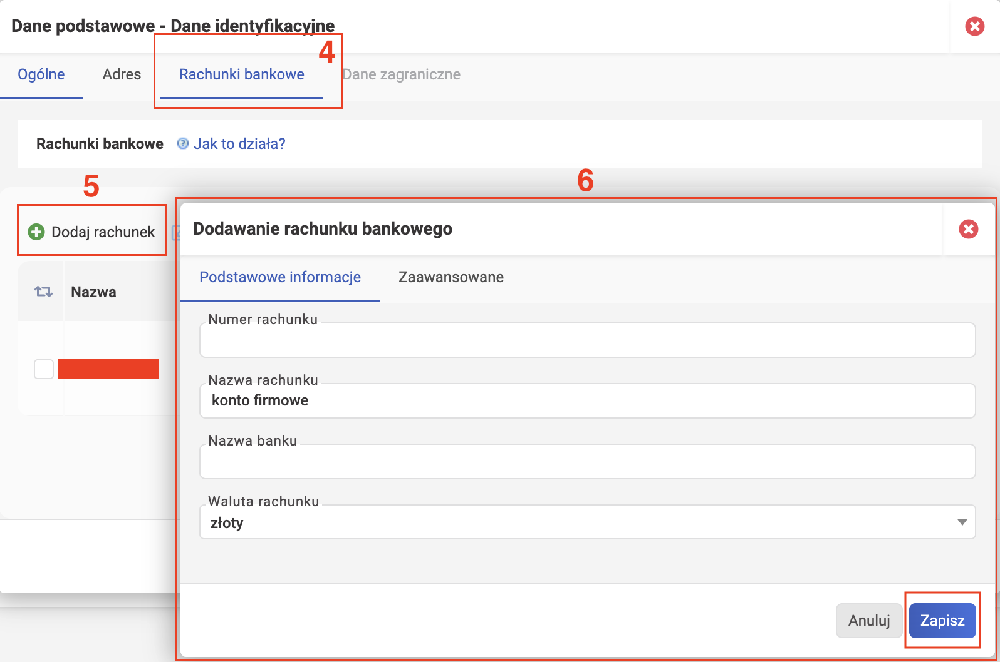
Нажимаем Zapisz (Сохранить), чтобы сохранить данные фирмы.
Настройка налоговых данных¶
Для этого нам понадобится блок Podatki.
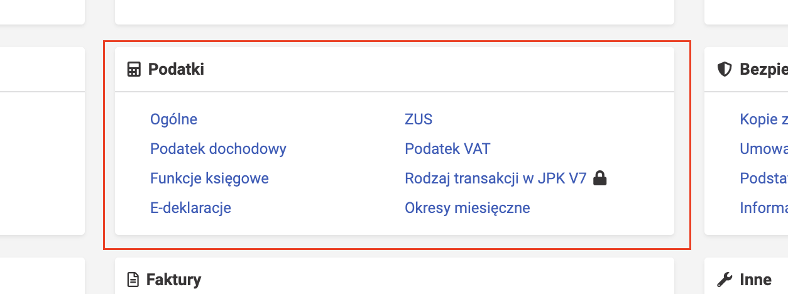
Podatki - Ogólne¶
- Выберите дату начала ведения JDG (data rozpoczęcia działalności gospodarczej), которую указали при регистрации.
- Выберите с какого месяца хотите начать считать налоги в wFirma (Miesiąc rozpoczęcia prowadzenia księgowości w systemie). Почти всегда совпадает с месяцем начала ведения деятельности.
- Номер индивидуального счёта - микросчёта, на который будут оплачиваться налоги (Indywidualne konto bankowe - mikrorachunek) - подтягивается автоматически. Рядом с полем может появиться кнопка "Подтвердить", нажмите её, чтобы подтвердить номер микросчёта. Проверить микросчёт можно с помощью Generator mikrorachunku podatkowego по номеру NIP.
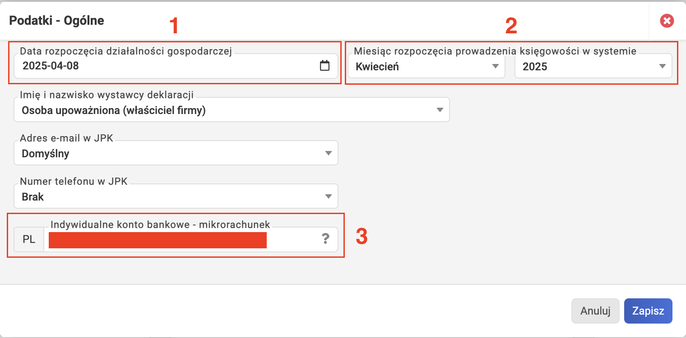
Podatki - ZUS¶
Указывайте в настройках wFirma точно такие же данные, которые вы указывали при регистрации в ZUS. Расхождения в настройках wFirma и настройках ZUS - причина многих ошибок! Правильный источник данных: последний бланк ZUS ZZA или ZUS ZUA.
- Номер счёта, на который будут оплачиваться взносы ZUS (Indywidualne konto bankowe), подтягивается автоматически. Проверить можно с помощью eskladka.
-
Выберите схему взносов (Schemat składek społecznych). Если вы только начинаете свои приключения с ИП, то скорее всего для вас это Ulga na start (льгота для начинающих; убедитесь, что имеете право на применение этой льготы!). Перечислим все доступные варианты:
Polski Русский Пояснение Duży ZUS Полный ZUS Взносы на соцстрахование, здравоохранение и фонд труда. База для расчёта: 60% средней зарплаты. Код: 0510 или 0512. 2 letni preferencyjny ZUS 2 года льготного ZUS Уменьшенные взносы на соцстрахование — 30% от минимальной зарплаты. Код: 0570 или 0572. Mały ZUS Plus Малый ZUS Плюс Для доходов до 120 000 злотых в прошлом году. Требует ручного ввода базы. Код: 0590 или 0592. Tylko zdrowotne Только медицинское страхование Для тех, кто работает по найму и параллельно ведёт бизнес — только медстраховка. Код: 0510 или 0512. Tylko zdrowotne - 6-miesięczna ulga na start Только медстраховка – 6 месяцев льготы на старт Начинающие предприниматели. Код регистрации в ZUS: 0540. Tylko zdrowotne - 2 letni preferencyjny ZUS Только медстраховка – 2 года льготы для новых фирм Новые фирмы с правом только на медстрахование. Код: 0570 или 0572. Tylko zdrowotne - mały ZUS plus Только медстраховка – Малый ZUS Плюс Упрощённая система с правом на только медстрахование. С 01.02.2020. Код: 0590 или 0592. Brak składek Без взносов Для застрахованных в KRUS или в другой стране ЕС — не нужно платить ZUS в Польше. Mały ZUS i Tylko zdrowotne - mały ZUS Малый ZUS и Только медстраховка – Малый ZUS Устаревшие схемы, действовали до 31.01.2020. Сейчас использовать нельзя. Расширенные настройки (Zaawansowane) установятся автоматически. Не трогайте их. В очень редких случаях, таких как ИП-пенсионер или ИП-инвалид, здесь нужно что-то менять. Подробнее об этом читайте в документации wFirma. 3. Выберите отдел NFZ (Oddział NFZ), который указывали при регистрации ZUS. Он изменяется при переезде в другое воеводство.
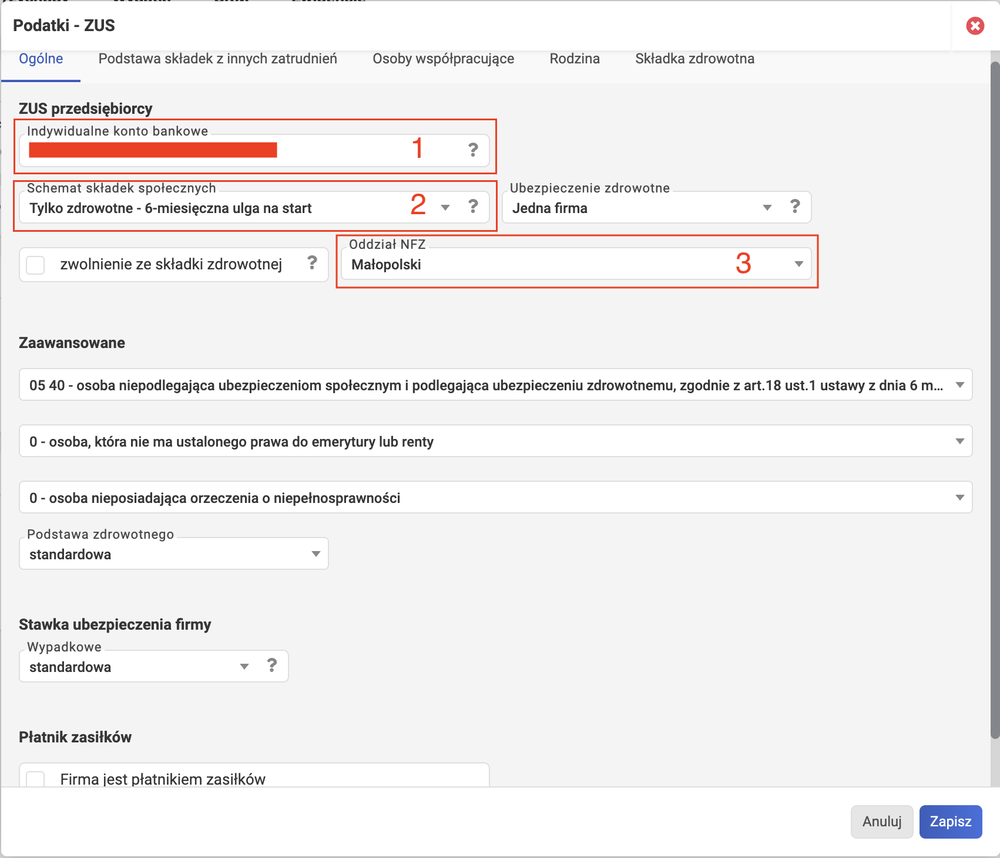
Podatki - Podatek dochodowy¶
- Выберите Urząd skarbowy (налоговую инспекцию), которую указывали при регистрации JDG. Если забыли, то проверить можно в своём кабинете предпринимателя с помощью инструмента CEIDG Viewer.
-
Укажите вид бухучёта (Rodzaj ewidencji):
Polski Русский Ewidencja Przychodów (ryczałt) Учёт Доходов (рычалт) Księga Przychodów i Rozchodów Книга Учёта Доходов и Расходов (PKPiR) Księgi rachunkowe﹡ Бухгалтерские книги﹡ ﹡ Księgi rachunkowe - это полный учёт. Обязателен для тех, кто зарабатывает свыше 2.000.000 евро. Малые и средние предприниматели могут выбрать добровольно (но зачем?!).
-
В поле DOMYŚLNA STAWKA RYCZAŁTU выберите процента налога, соответствующий вашему коду PKWiU. Если у вас несколько видов деятельности, то выберите преобладающую ставку, которая будет использоваться по умолчанию при выставлении фактур в системе (с возможностью изменить на другую).
- В поле Zaliczka выбираем ежемесячную (miesięczna) или ежеквартальную (kwartalna) оплату аванса PIT. Выбор совершается один раз и на весь год.
-
Ставим галочку, если применяете Metoda kasowa w PIT. Пояснение:
Polski Русский Объяснение Metoda kasowa w PIT Кассовый метод в PIT Учёт доходов и расходов по факту оплаты (на банковский счёт). Нужно заявить в налоговую о своём желании применять кассовый метод. Metoda memoriałowa w PIT Метод начислений в PIT Учёт доходов и расходов по моменту возникновения обязательства (начислению). Применяется по-умолчанию ко всем ИП.
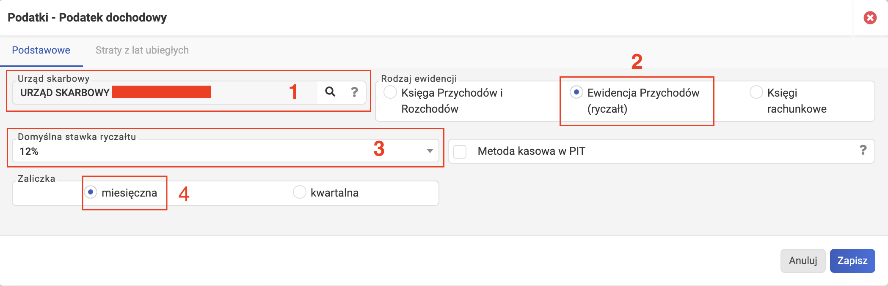
Podatki - Podatek VAT¶
Внимание! Настройки wFirma должны в точности соответствовать действительности. Рекомендуется выполнить простые проверки, чтобы избежать ошибок.
- Поставьте галочку płatnik VAT, если зарегистрированы на VAT в Польше.
- Проверка:
- Зайдите на сайт podatki.gov.pl. Это biała lista.
- Впишите один из идентификаторов: Номер счёта (Numer konta), NIP или REGON, используя свои данные.
- Нажмите синюю кнопку «Szukaj».
- Status podatnika: Zwolniony => Освобождён от VAT => ☐ НЕ отмечайте галочку.
- Status podatnika: Czynny => Плательщик VAT => ☑ Отметьте галочку.
- Проверка:
- Выберите Urząd skarbowy (налоговую инспекцию), которую указывали при регистрации JDG.
-
Если не выбрали platnik VAT, то в поле "podstawa prawna zwolnienia z VAT" укажите причину освобождения.
Polski Русский Пояснение Zwolnienie ze względu na rodzaj prowadzonej działalności Освобождение в связи с видом осуществляемой деятельности Некоторые виды деятельности (например, образовательные услуги) освобождены от НДС по закону Art. 43. - Zwolnienia przedmiotowe. Zwolnienie ze względu na nieprzekroczenie 200 000 PLN obrotu Освобождение в связи с непревышением оборота в 200 000 злотых Если годовой доход не превышает 200 000 PLN, можно не становиться плательщиком НДС по закону Art. 113. - Zwolnienia podmiotowe. ⭐ Популярная причина. Zwolnienie na mocy rozporządzenia MF Освобождение на основании постановления Минфина Особый случай. Inna podstawa prawna Другое правовое основание Очень особый случай. -
Поставьте галочку przedsiębiorca zarejestrowany w UE (VAT-UE), если зарегистрированы на VAT в ЕС (требуется, например, если оказываете услуги фирмам из ЕС).
- Проверка:
- Зайдите на сайт поисковой системы VIES EU.
- Заполните обязательные поля «Member State» и «VAT Number» (это NIP), введя свои данные.
- Нажмите синюю кнопку «Verify».
- Проверка:
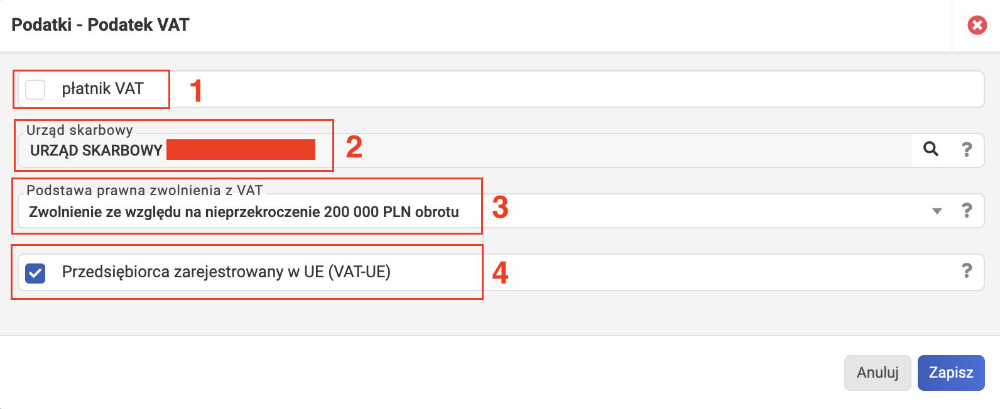
Podatki - Funkcje księgowe¶
- В меню для настройки бухгалтерских функций включаем функцию расчёта курсовой разницы (wyliczanie różnic kursowych).
Пригодится, если получаете оплату в иностранной валюте и дата в фактуре (дата выставления или дата продажи - что раньше) отличается от даты зачисления оплаты.
- А функция "Sprawdzanie poprawności dat księgowania" нужна для того, чтобы wFirma проверяла корректность дат бухгалтерских записей.
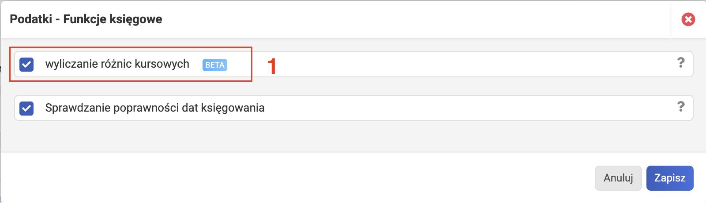
Настройка услуг¶
Это каталог. Добавленные в него услуги можно будет выбрать при выставлении фактуры для автоматического заполнения полей.
- Нажимаем Przychody или Magazyn (зависит от пакета wFirma).
- Нажимаем Produkty.
- Нажимаем Dodaj produkt.
-
Вводим название услуги (Nazwa). Важно выбрать то, что соответствует вашему роду деятельности и коду PKWiU. Обычно для программистов это могут быть:
- Usługi komputerowe
- Tworzenie oprogramowania
- Usługi oprogramowania
-
Выбираем тип (Typ) - Usługa.
- Выбираем единицу измерения по-умолчанию (Jednostka podst.) - usł.
- (опционально) Вводим соответствующий код PKWiU/CN. Значение кода на скриншоте:
- 62.01.1 = Usługi związane z projektowaniem i rozwojem technologii informatycznych = Услуги, связанные с проектированием и разработкой информационных технологий.
- (если ryczałt) Выбираем соответствующую ставку налога. Для PKWiU 62.01.1 это 12%.
Также, сразу можно указать цену нетто / брутто (плательщики VAT) или просто цену (Cena; в случае плательщиков, освобождённых от VAT). Но тут есть проблема, что на данном этапе нет возможности указать валюту. И если укажете цену, а потом в фактуре поменяете валюту, то цена в фактуре может автоматически конвертироваться. Поэтому цену можно пропустить и указывать при выставлении фактуры.
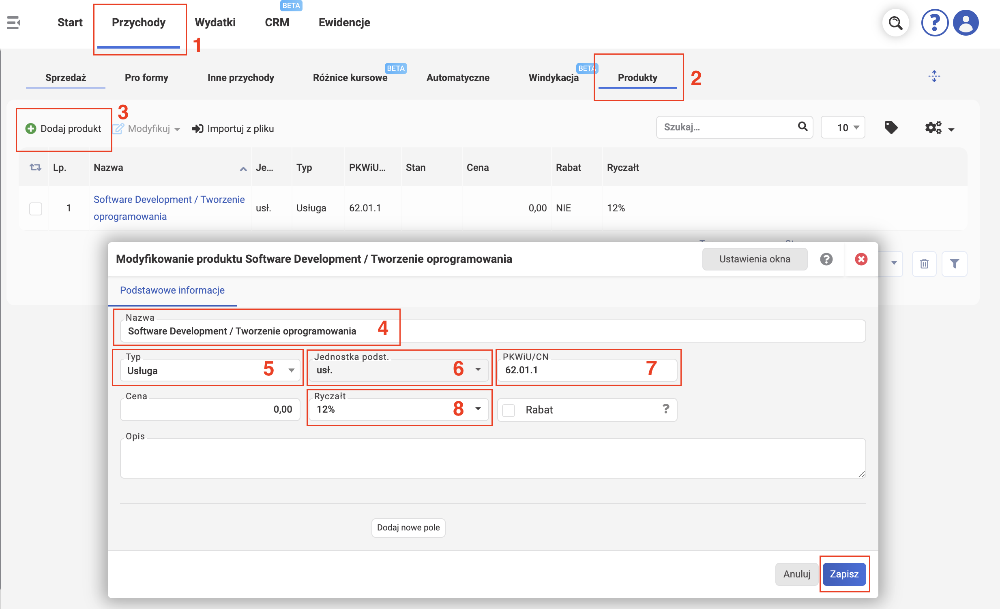
Настройка контрагентов¶
Добавляем контрагента, кому будем выставлять фактуры. Добавленного контрагента можно будет выбрать при выставлении фактуры для ее автоматического заполнения. Данные настройки индивидуальны. Примерные шаги такие:
- Нажимаем CRM.
- Нажимаем Kontrahenci.
- Нажимаем Dodaj kontrahenta.
- Если контрагент из Польши, то в окошке Dodawanie nowego kontrahenta вводим его NIP и нажимаем синюю кнопку Pobierz. Данные подтянутся автоматически.
- Иначе можно заполнить данные вручную (кнопка WYPEŁNIJ RĘCZNIE).
- Например, если контрагент из ЕС, то в окошке Dodawanie nowego kontrahenta можно выбрать VAT UE в качестве идентификатора, в поле Identyfikator добавить номер VAT-UE включая две буквы, с особой внимательностью заполнить адрес (если в адресе отсутствует почтовый индекс — ввести пробел в поле Kod), а также выбрать страну из выпадающего списка «Kraj».
- При добавлении нового иностранного контрагента из-за пределов ЕС, после ввода названия компании, необходимо выбрать тип идентификатора «Inne», заполнить адрес (если в адресе отсутствует почтовый индекс — добавить пробел), а также выбрать страну из выпадающего списка «Kraj».
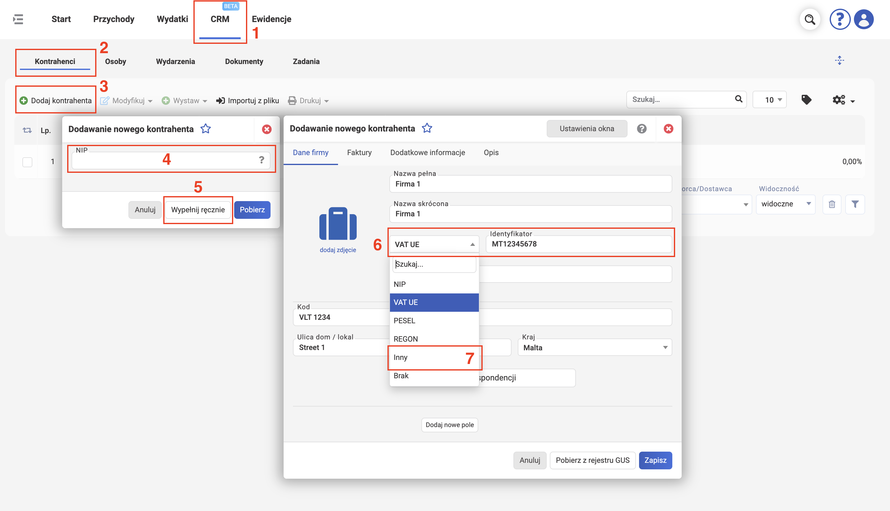
На вкладке Faktury нет обязательных для заполнения полей. Но для вашего же удобства рекомендуется сразу указать:
- Rachunek - ваш счёт, который будет виднеться на фактурах в данных продавца для этого конкретного контрагента. Полезная настройка для тех бизнесов, которые имеют несколько разных счетов и используют разные счета для разных групп контрагентов.
- Język - язык фактуры. В данном случае выбран польский-английский.
- Metoda płatności - метод оплаты. На скриншоте выбран przelew - это банковский перевод.
- Szablon stałej informacji - шаблон постоянной информации — здесь можно добавить описание, которое будет отображаться на каждой фактуре для данного контрагента. Оставляем пустым.
- Rabat - скидка. Пропускаем.
- Termin płatności - срок оплаты. Присутствует возможность установить индивидуальный срок оплаты для контрагента, который будет отсчитываться в днях от даты выставления фактуры.
- Опция przypominaj o niezapłaconych fakturach - напоминания о неоплаченных фактурах.
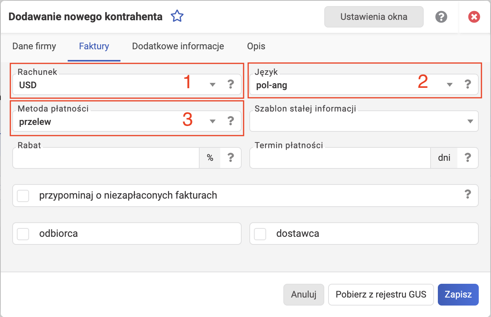
Нажимаем Zapisz, чтобы сохранить данные.
Подпись на фактуре¶
В блоке Faktury => Logo firmy можно добавить изображение своей подписи или печати (Pieczątka / podpis) и логотип фирмы (Logo firmy), которые будут показываться на фактуре.
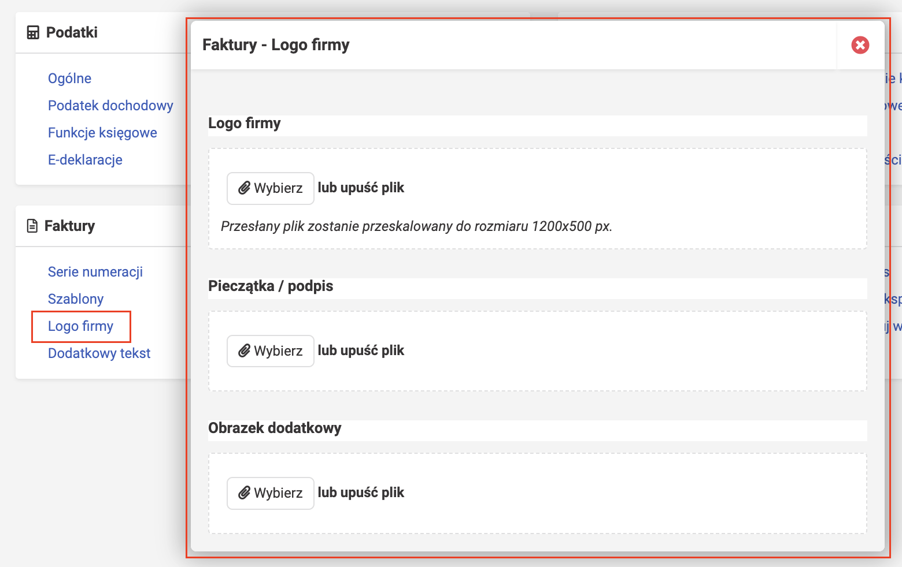
Верификация фирмы¶
Для отправки деклараций ZUS DRA из wfirma необходимо верифицировать профиль. Это можно сделать в блоке Dane podstawowe => Weryfikacja firmy. В целях подтверждения личности требуется отправить один перевод со своего бизнес-счёта.
Info
Стоит отметить, что верификация не является обязательной. Wfirma предоставляет один год бесплатного использования при регистрации. Если вы не верифицируете профиль, то через год сможете зарегистрироваться заново и получить ещё один бесплатный год (разумеется, если такая акция всё ещё будет доступна). Стоит ли это усилий — решать вам. Однако в таком случае вам придётся самостоятельно скачивать файл ZUS DRA и загружать его на портал ZUS.
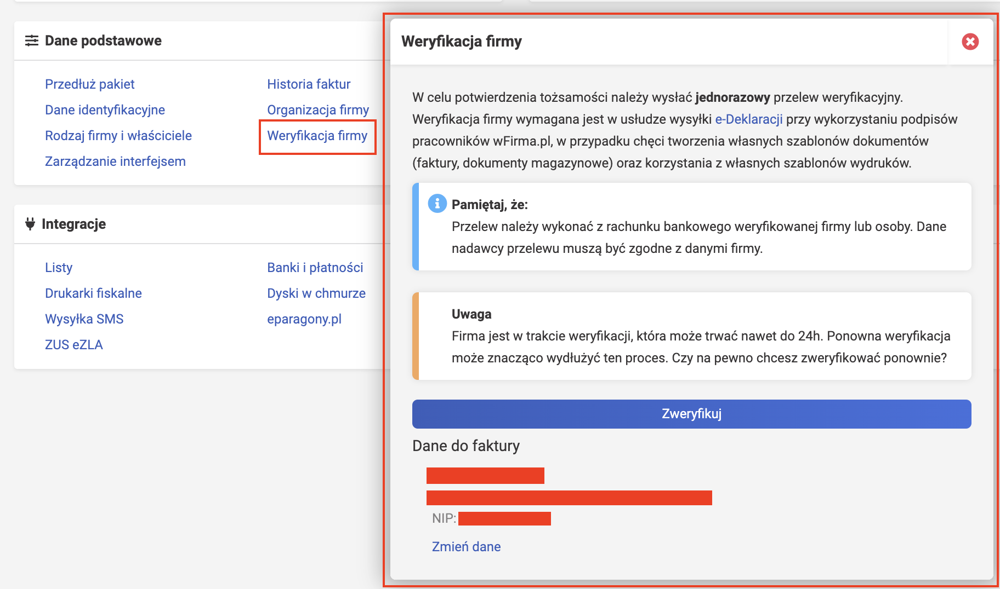